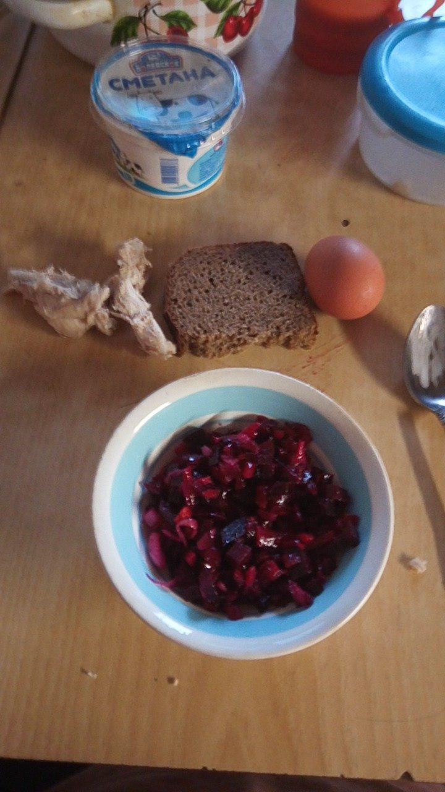
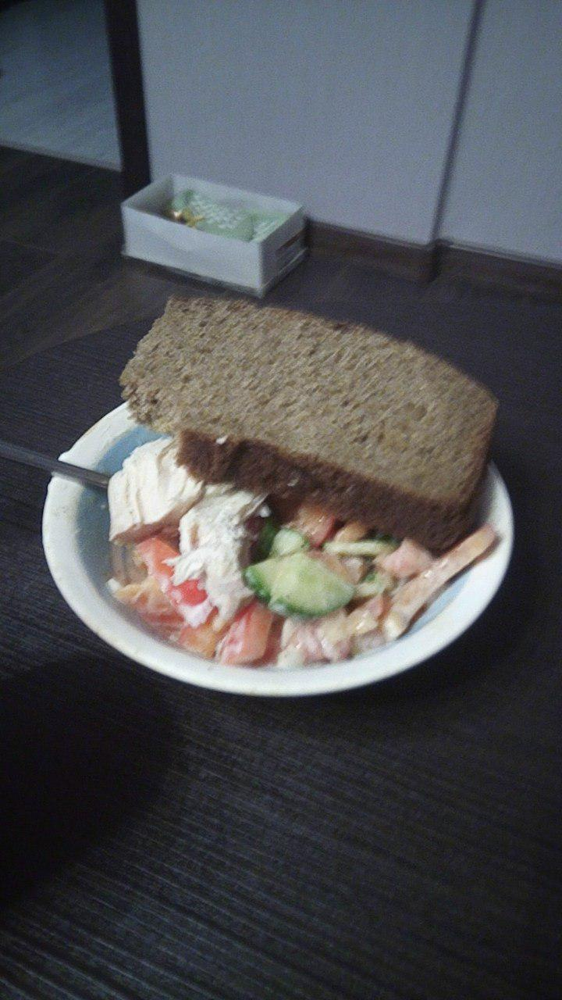
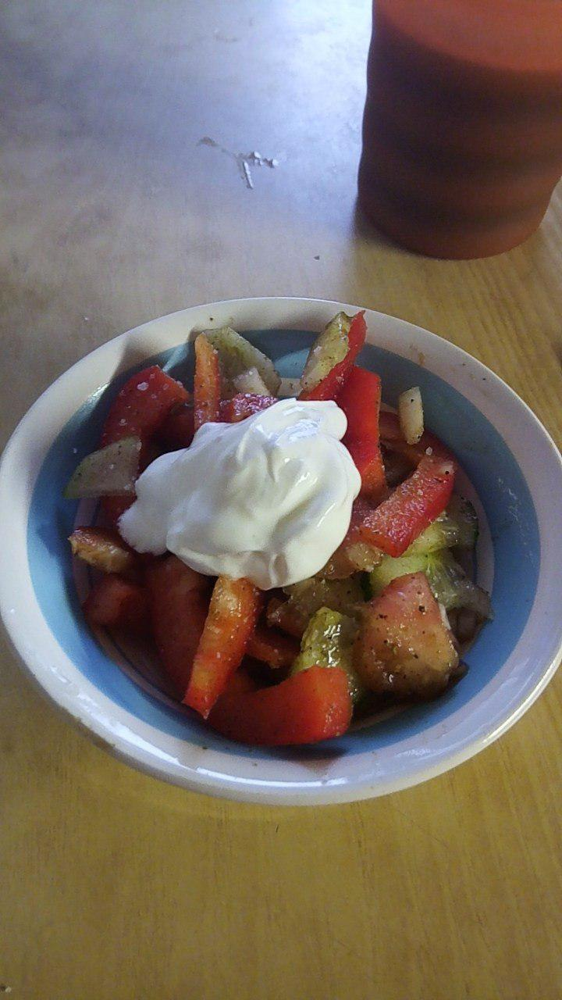
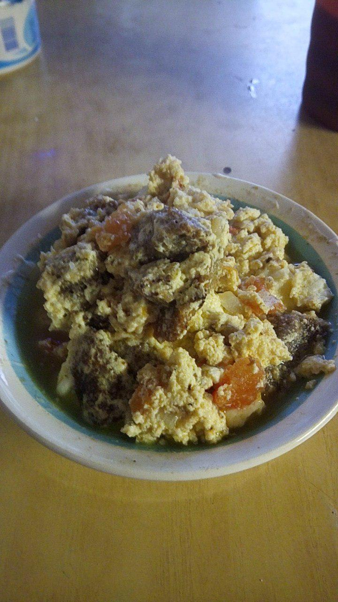
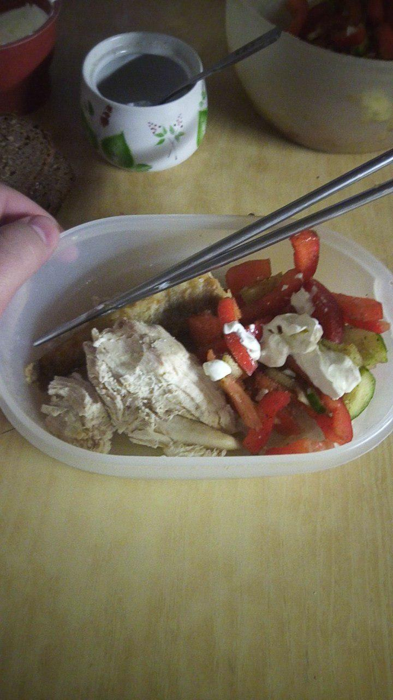
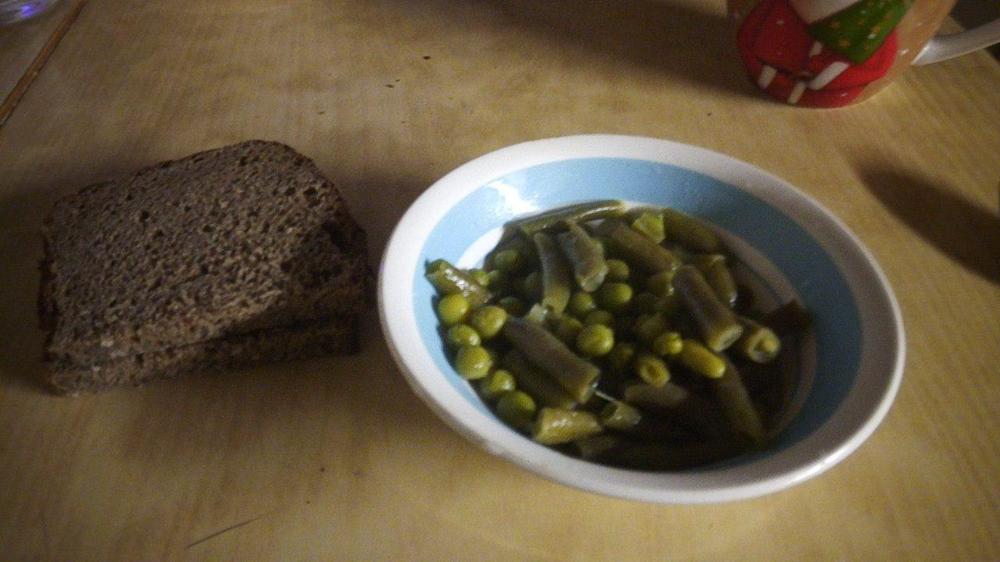
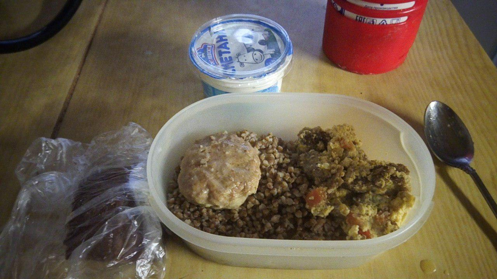
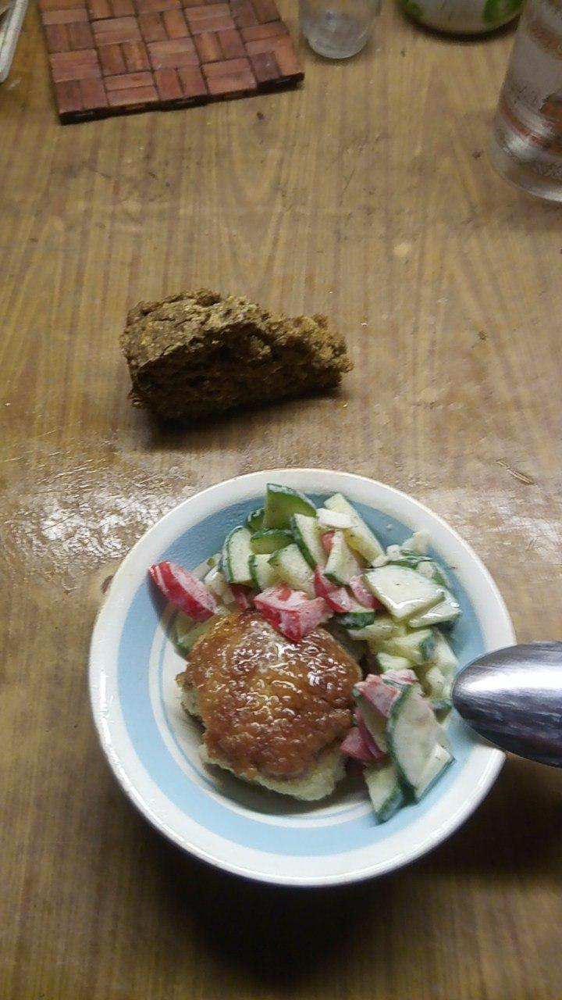
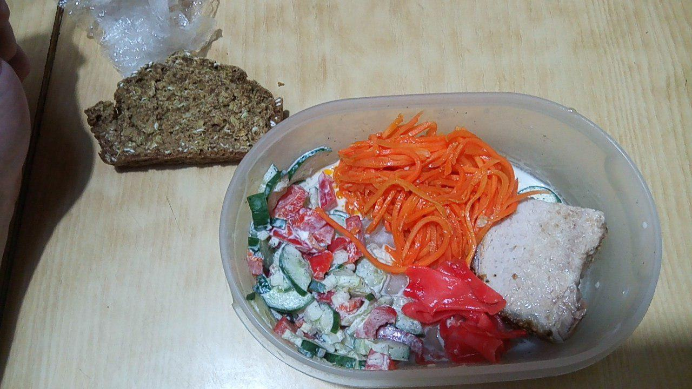

Дневник питания
Январь
27 января
11:20
Давление 158/86
11:30
Завтрак. Гороховый суп с картофелем и морковью на куриной грудке, 3 чебурека, кофе чёрный, 2,5 ч.л. сахара
15:00
Прогулка
16:10
Макароны, печень куриная с подливом и сметаной, 2 куска бородинского
16:20
Давление 157/99
18:30
Мандаринка
19:30
Пиала венигрета без картофеля, 2 куска бородинского, чебурек
22:00
2 бутерброда с колбасой, сыром, солёным огурцом на бородинском хлебе
01:00
Горсть миндаля
28 января
12:30
Кофе с 2,5 ч.л.сахара.
14:00
Рассольник без картофеля с кур.грудкой, кусочек бородинского. Кофе с 2,5 ч.л.сахара.
Оставшаяся часть дня
Атака лени и уныния, данные о питанию благополучно не зафиксированы.
29 января
11:30
Творог 1%, йогурт нат.с клубникой, мюсли, кофе, 2,5 ч.л.сахара
14:40
1 яйцо без желтка, венигрет, куриная грудка, полкуска ароматного хлеб. Всё в пиале.

18:00
Овощной салат, сметана 10%, кусок бородинского, куриная грудка/

00:30
Груша
03:50
Кефир 0,3 л, 4 с.л. Мюслей
30 января
14:00
Вес 113,8 кг.
14:15
Стакан молока 3,2%
14:30
Овощной салат, сметана 10% 2 ч.л., кофе с 2 ч.л.сахара. Омлет на молоке с бородинским хлебом, луком, помидором, подсолн.маслом. В маленьких пиалах.


15:00
Кофе с 1 ч.л. сахара
18:40
Куриная грудка, кусочк жареной рыбы (минтай?), овощной салат, сметана 10% 1 ч.л., 1 бородинский. Пластиковый контейнер.

22:00
Утренний омлет, домашняя котлета, 1 кусок бородинского, кусочек сыра. Пиала.
00:30
Горстка миндаля.
05:00
Компот с сахаром.
31 января
12:00
Вес 113,9 кг.
12:15
Кофе с 2 ч.л.сахара, бутерброд с куриным сыром и рулетом, серая тарелк рассольника, бородинский хлеб, сметана 10%.
15:00
179/96
15:40
Овощной салат, сметана 10%, 2 бородинского, котлета домашняя
18:00
2 бородинского, пиала тушёных фасоли+горошка+капусты брокколи, пиала тушёной говядины с бульоном и сол. огурцом.

19:30
154/82
21:30
Пиала жидкой овсяной каши на молоке, кусочек масдама и куриного рулета.
01:20
Половина пиалы говядины с огурцом, 1 болгарский, кусочек болгарского перца.
01 февраля
14:30
Вес 113,1 кг. Вчерашний омлет, гречка отварная, домашняя котлета, 2 боодинского, сметана 10%.

19:00
Давление 161/87. 3 с.л. Тушёных овощей(фасоль+++), пиала говядины, кусочек бородинского и белого.
22:00
Пиала макарон твёрдых сортв, пиала говядины, кусочек болгарского перца.

01:20
В одной пиале: овощной салат, куриная котлета, хлеб ржаной с овсянкой.

06:00
Рассольник без картофеля, 2 хлеба с овсянкой, лук, кофе с 2 ч.л.сахара, кусок маасдама.
02 февраля
12:50
2 яйца, 2 с.л.кабачковой икры, 2 с.л.nворога обезжиренного с домашним йогуртом.
17:40
Вес 113,2 кг.
18:00
Киви и груша
22:00
Овощной салат со сметаной, морковь по-корейски, имбирь, свинина запечёная, кусок ржаного хлеба с овсянкой.

22:10
Давление 154/87